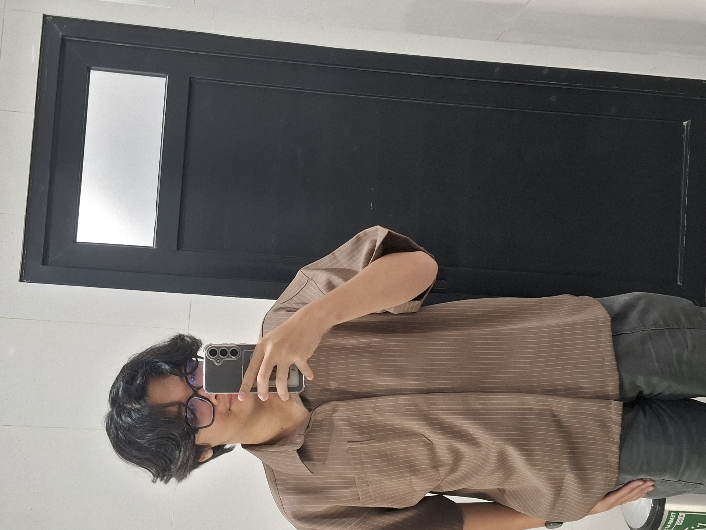

An active Bachelor's degree student in Accounting (Class of 2023) with strong dedication and a solid understanding of financial accounting cycles, comprehensive financial reporting, and risk management. Possesses practical experience as an internal accountant in a micro-scale business, managing cash flow, recording daily journal entries, and preparing income statements. Proficient in conducting macroeconomic and microeconomic fundamental analysis, highly skilled in using Microsoft Excel for financial data processing, and capable of working collaboratively within a team.